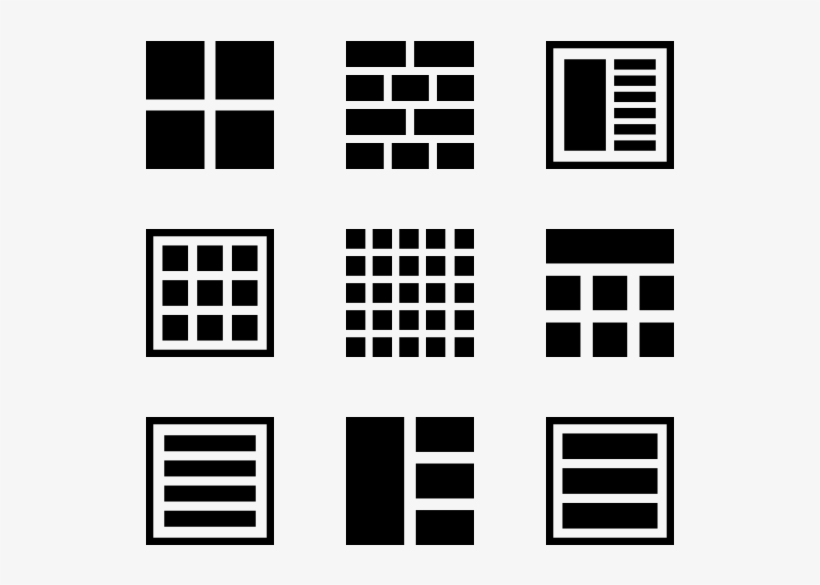
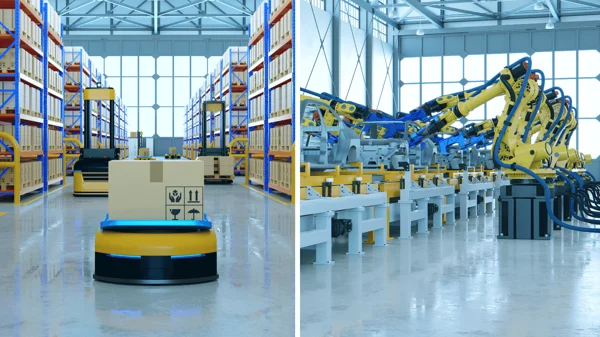

12.2 Identify the Application
For each scenario presented, determine whether it can be approached using:
- Supervised Learning
- Unsupervised Learning
- Multi-Armed Bandit
- Classical Reinforcement Learning
- Deep Reinforcement Learning

Scenario 1: Product Promotion
You’re given multiple promotional offers (‘10% off’, ‘free shipping’, ‘buy-one-get-one-free’). Each time a customer logs in to the company’s web app, you must select a promotion to maximize customer conversion (revenue).

There is sequential decision-making (choosing a promotional offer each time a user logs in) and there is no state transition dynamics, hence only one state.
Multi-Armed Bandit - our data \(\mathbf{X}\) is user interaction with the promotional offers, our action space (or arms) \(\mathcal{A}\) are the different promotional offers (‘10% off’, ‘free shipping’, ‘buy-one-get-one’), and the reward function \(R\) is the conversion of each customer.
Scenario 2: Inventory Management
You’re managing a warehouse and must decide daily restocking quantities for multiple products. Each decision affects future inventory levels, stockouts, and holding costs. The goal is to minimize total cost over time while meeting demand.
There is sequential decision-making (choosing a daily restocking quantity), there is state transition dynamics (each decision affects future inventory levels), and states are finite (infinite inventory levels are not possible).
Classical Reinforcement Learning - the state space \(\mathcal{S}\) is current inventory levels and demand forecasts, our action space \(\mathcal{A}\) are the reordering quantities, our reward function \(R\) is the total cost accrued, and our terminal step \(T\) occurs at the end of a sales cycle.
Scenario 3: Product Association Discovery
You’re given historical transaction data showing which products customers buy together. The company wants to discover natural associations. For example, items that frequently co-occur in the same basket.

There is no sequential decision-making involved and there are no labels, or ground-truth.
Unsupervised Learning - our features \(\mathbf{X}\) are the product purchase patterns, and we can use any associative learning algorithm, such as Kohonen Rule, in order to discover products that are co-purchased together.
Scenario 4: Key Performance Indicator (KPI) Estimation
You’re given the company’s historical data (sales, marketing spend, customer activity, etc.) with a critical KPI value (customer retation rate). The company wants you to estimate the KPI for the next quarter.

There is no sequential decision-making involved and there are labels, or ground-truth.
Supervised Learning - our features \(\mathbf{X}\) are historical data, and our label \(\mathbf{y}\) is our KPI values or the customer retention rate.
Scenario 5: High Engagement Layout
You’re given multiple layouts to display to a customer. As the customer logs in to the company’s web app, you must choose the layout that maximizes engagement (time spent).

There is sequential decision-making (choosing a layout each time a user logs in) and there is no state transition dynamics, hence only one state.
Multi-Armed Bandit - our data \(\mathbf{X}\) is past user interactions with layouts, our action space (or arms) \(\mathcal{A}\) are the different layouts, and the reward function \(R\) is the time spent on the web app.
Scenario 6: Customer Segmentation
You’re given data regarding customers demographics (age, gender, ethnicity, education level, income, etc.), and are asked to segment the profile of each customer into \(k\) segments.

There is no sequential decision-making involved and there are no labels, or ground-truth.
Unsupervised Learning - our features \(\mathbf{X}\) are the customer demographic data, and we can use any clustering algorithm, such as K-Means, in order to group similar customers.
Scenario 7: Sensor Data for Quality Checks
The company uses robotic arms on the production line to inspect products. Robots receive high-dimensional sensor data (images, temperature, vibration). They must decide whether to adjust, continue inspection, accept, or reject a product to maintain quality standards.

There is sequential decision-making (each action changes what the robot observes next and what opportunities it has for quality control), there is state transition dynamics (states evolve as products move along the line and as the robot adjusts its position), and states are high-dimensional (images, temperature, vibration).
Deep Reinforcement Learning - the state space \(\mathcal{S}\) is images, temperature, and vibration signals, our action space \(\mathcal{A}\) consists of adjust, continue inspection, accept, or reject, our reward function \(R\) is the defect detection accuracy, and our terminal step \(T\) robot finishes inspecting a batch.
Scenario 8: Product Recommendation
A company wants to recommend products to users based on past behavior (browsing history, past purchases, real-time interactions). The goal is to maximize conversions (revenue).
- This is a trick question as it can be approached in multiple ways.
If ground truth is to be interpreted as the products purchased by a user:
- Supervised Learning - features \(\mathbf{X}\) would be the previous purchasing behavior, and the labels \(\mathbf{y}\) would be the products purchased.
If sequential decision-making is involved and there is no state transition dynamics, then:
- Multi-Armed Bandit - data \(\mathbf{X}\) would be the user interaction data, the action space \(\mathcal{A}\) would be the set of products to recommend, and the reward function \(R\) would be whether the user clicks on or purchases the recommended product.
If there is added complexity by adding state transition dynamics (users previous browsed items):
- Classical Reinforcement Learning - the state space \(\mathcal{S}\) would be the user’s current browsing or purchasing history, the action space \(\mathcal{A}\) and reward function \(R\) similar to the MAB approach
If there is to be more complex state representation (images of a particular product, user product feedback):
- Deep Reinforcement Learning - similar to Classical RL, but using deep neural networks to handle large and complex state spaces, such as images of a particular product or user product feedback.